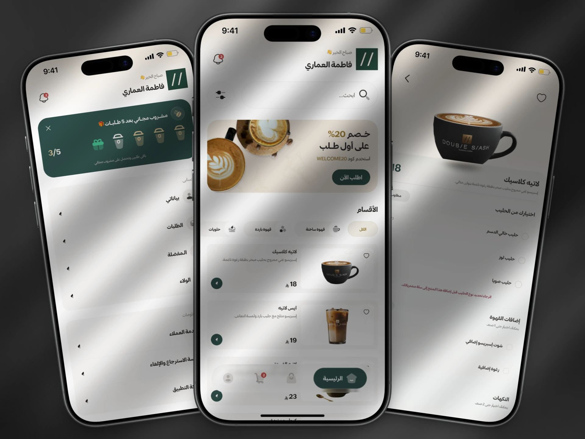

Separate required choices from extras
Milk options, flavour limits, and optional additions are distinguished within product details, making a customised order easier to review.
Food & beverage · Mobile app
From a customised coffee to a pickup that fits the customer.

01 / CONTEXT
An ordering app for Double Slash Coffee in Unaizah, Saudi Arabia. I designed the customer journey across the menu, customisation, checkout, pickup, and rewards.
02 / MY WORK
03 / DESIGN DECISIONS
Milk options, flavour limits, and optional additions are distinguished within product details, making a customised order easier to review.
The order moves through preparation and ready-for-pickup states. Branch and car pickup are represented in the order details.

04 / DELIVERY
The app was previously published on the App Store and has since been removed. This page documents the design work.